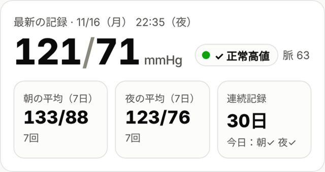
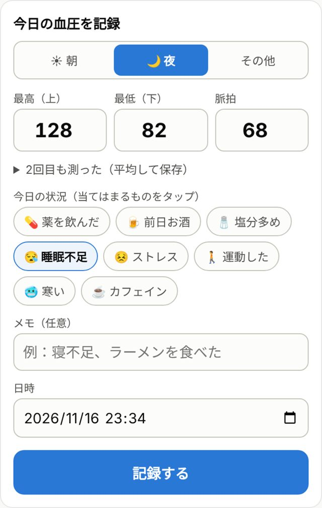
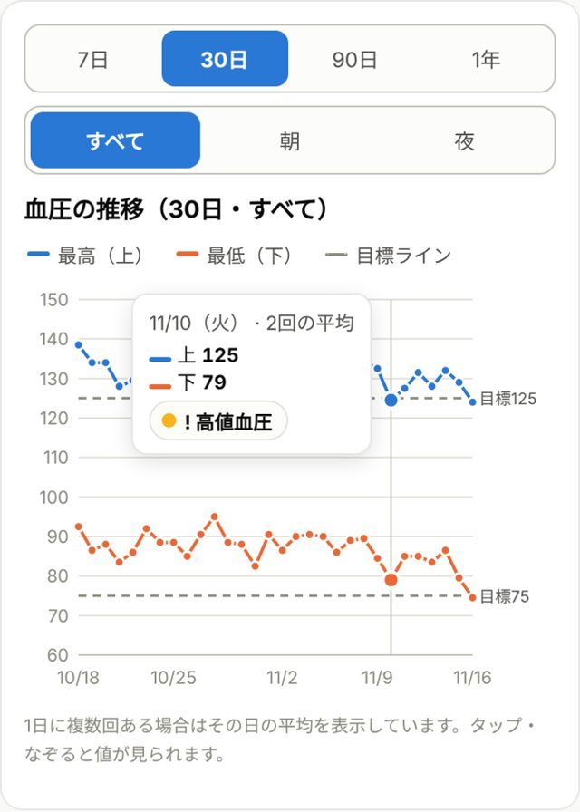
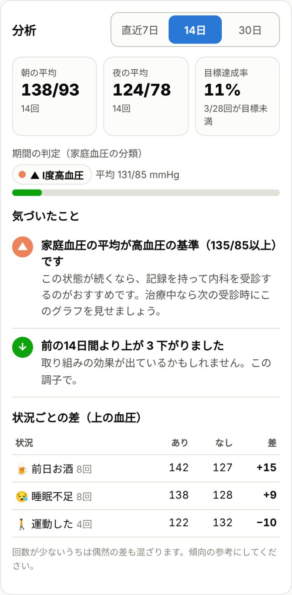
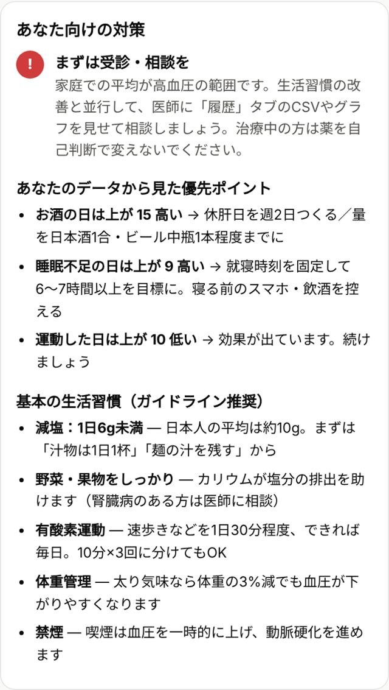
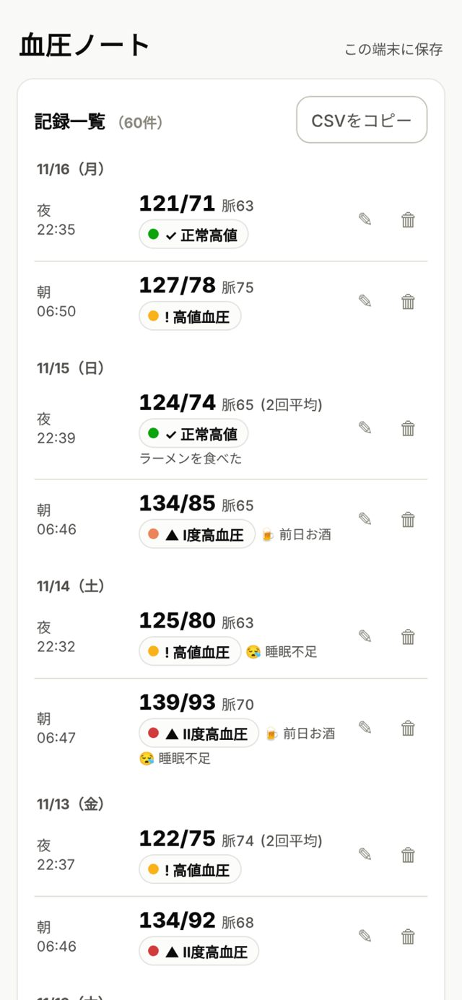
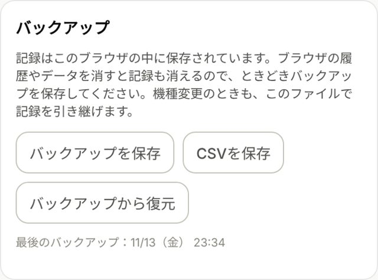
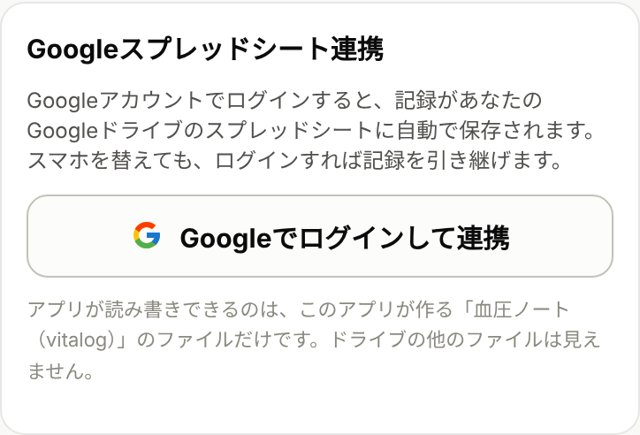
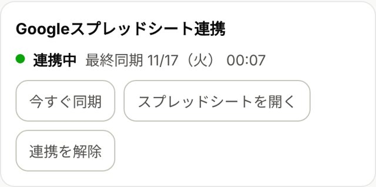

血圧ノートは、毎日の家庭血圧を記録して、グラフで推移を見て、自分に合った生活改善のヒントを受け取れる無料のWebアプリです。インストールもログインも要りません。

画面下のタブで4つの画面を切り替えます。
| タブ | できること |
|---|---|
| 記録 | 血圧・脈拍・その日の状況を入力する |
| グラフ | 血圧と脈拍の推移を見る |
| 分析・対策 | 平均・判定・傾向と、あなた向けの対策を見る |
| 履歴 | 記録の一覧、修正・削除、CSVのコピー |
| ⚙ 設定（右上） | 画面デザイン、Googleスプレッドシート連携、バックアップ |
ホーム画面に追加すると、青いハートのアイコンからアプリのように起動できます。最初に1回だけ行ってください。
記録は開き方ごとに保存されます。毎回ホーム画面のアイコンから開くようにすると、記録が分かれずに済みます。
毎日同じ条件で、朝と夜の1日2回測るのが基本です。条件をそろえると分析の精度も上がります。
| タイミング | 測る条件 |
|---|---|
| 朝 | 起きてから1時間以内、トイレの後、朝食と薬の前 |
| 夜 | 寝る前 |
上・下の血圧を入れて「記録する」を押すだけです。ほかの項目は任意です。

青い線が上の血圧、オレンジの線が下の血圧です。点線は目標値（初期値 125/75）で、線が点線より下にあれば目標達成です。

1日に複数回記録した日は、その日の平均が1つの点になります。下には脈拍の推移も表示されます。
直近7日・14日・30日から期間を選ぶと、その間の記録を自動で分析します。期間中3回以上の記録が必要です。

朝の平均と夜の平均をさらに平均し、日本高血圧学会の家庭血圧の分類に当てはめます。上と下で分類が分かれるときは高い方を採用します。
| 分類 | 上 | 下 | 表示 |
|---|---|---|---|
| 正常血圧 | 115未満 | 75未満 | ✓ |
| 正常高値 | 115〜124 | 75未満 | ✓ |
| 高値血圧 | 125〜134 | 75〜84 | ! |
| Ⅰ度高血圧 | 135〜144 | 85〜89 | ▲ |
| Ⅱ度高血圧 | 145〜159 | 90〜99 | ▲ |
| Ⅲ度高血圧 | 160以上 | 100以上 | ▲ |
次の点を自動でチェックし、当てはまるものだけ表示します。
| チェック | 表示される条件 |
|---|---|
| とても高い値 | 上180以上または下110以上があった |
| 高血圧の基準 | 平均が135/85以上 |
| 早朝高血圧の傾向 | 朝が夜より上で15以上高い |
| 前の期間との比較 | 上が3以上下がった／上がった |
| ばらつき | 日による差が大きい |
| 朝夜の記録不足 | 朝と夜がそろった日が半分未満 |
| 脈拍・低い値 | 脈拍の平均が100以上／上が90未満の回がある |
「今日の状況」を付けた日と付けなかった日で、上の血圧の平均を比べます。それぞれ2回以上あると表示されます。
判定と状況ごとの差に合わせて、優先すべき対策を上に出します。その下に減塩・運動・節酒など基本の生活習慣が並びます。

初期値はガイドライン（JSH2025）の家庭血圧の目標 125/75 未満です。医師から別の目標を言われている場合は、画面下の「目標値の設定」で変更して「保存」を押します。
記録は新しい順に、日付ごとに並びます（画面には最新300件まで）。


| ボタン | 使い方 |
|---|---|
| バックアップを保存 | 全記録をファイル（.json）で保存。月に1回程度がおすすめ |
| CSVを保存 | Excelで開けるファイル（.csv）で保存。受診のときに便利 |
| バックアップから復元 | 保存した.jsonを選ぶと記録を戻す。今ある記録は消えず、足りない分だけ追加 |
Googleアカウントがあれば、記録を自分のGoogleドライブのスプレッドシートに自動で保存できます。スマホを替えても、ログインし直すだけで記録を引き継げます。使わなくてもアプリは今まで通り使えます。


画面右上の⚙（設定）の「画面デザイン」で、見た目を好みに変えられます。設定はこの端末に保存されます。
はじめは「黒基調・オレンジ」になっています。
| こんなとき | どうする？ |
|---|---|
| 記録が消えた | ブラウザの履歴やデータを消すと記録も消えます。バックアップがあれば「バックアップから復元」で戻せます |
| ホーム画面とブラウザで記録が違う | 開き方ごとに保存場所が分かれることがあります。いつもホーム画面のアイコンから開いてください |
| スマホとパソコンで同じ記録を見たい | Googleスプレッドシート連携を使うと、同じGoogleアカウントでログインした端末どうしで記録がまとまります。連携しない場合は、バックアップを保存してもう一方で復元します |
| 「Googleへのログインがキャンセルされました」と出る | ログイン画面を閉じると表示されます。もう一度「今すぐ同期」を押してください。画面が開かないときは、ポップアップのブロックを解除してください |
| スプレッドシートを消してしまった | 「今すぐ同期」を押すと、新しいスプレッドシートが作られて端末の記録が書き込まれます |
| 「記録を保存できません」と出る | プライベートモード（シークレットモード）をオフにして、通常のSafariやChromeで開いてください |
| 分析が表示されない | 選んだ期間に3回以上の記録が必要です。期間を30日にするか、記録を続けてください |
| 入力を間違えた | 記録タブの最新の記録にある「✎ 修正」、または履歴タブで記録の行を押して直します。不要なら「🗑」で削除します |
| 他の人にも使ってほしい | このアプリのURLを送るだけです。記録はそれぞれの端末に保存され、お互いには見えません |
このアプリの判定や対策は、記録から機械的に計算した目安であり、医師の診断ではありません。
分類と目標値は、日本高血圧学会『高血圧管理・治療ガイドライン2025』の家庭血圧の基準をもとにしています。
アプリに戻る